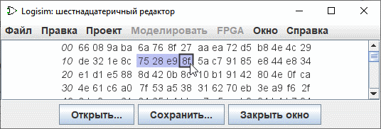

Шестнадцатеричный редактор
Logisim включает в себя встроенный шестнадцатеричный редактор для просмотра и редактирования содержимого памяти. Для доступа к нему вызовите всплывающее ( кликнуть cправа ) меню компонента памяти и выберите Редактировать | содержимое... | . Для компонентов ПЗУ, содержимое памяти которых - часть значения атрибута, вы можете получить доступ к шестнадцатеричному редактору, нажав на соответствующее значение атрибута :содержимое.

Числа, выделенные курсивом слева, отображают адреса памяти, записанные в шестнадцатеричной форме. Другие числа отображают значения, начиная с этого адреса памяти; шестнадцатеричный редактор может отображать 4, 8 или 16 значений в каждой строке, в зависимости от того, что вписывается в окно. Чтобы помочь в подсчёте, каждая группа из четырех значений имеет больший промежуток между ними.
Вы можете перемещаться по памяти с помощью полосы прокрутки или с помощью клавиатуры (клавиши со стрелками, Home, End, Page Up, и Page Down). Ввод шестнадцатеричных символов будет изменять выбранное значение.
Вы можете выбрать диапазон значений перетаскиванием мыши, щелчком мыши с нажатой кликнуть cправа, или перемещаясь по памяти с помощью клавиатуры с нажатой Shift. Значения могут быть копированы и вставлены с помощью меню | Правка | или с помощью соответствующих клавиш быстрого доступа Ctrl-C, Ctrl-V, Ctrl-X ...; также, буфер обмена может быть передан в другие приложения.
Для загрузки или сохранения данных из файла используются две кнопки (Открыть..., Сохранить...). Информацию о типах файлов можно найти в Текстовое меню и файлы.
Далее: Руководство пользователя.